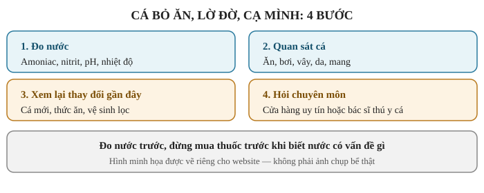

Cá bỏ ăn, bơi lờ đờ, cạ mình: checklist chẩn đoán nhanh trước khi mua thuốc
Tác giả: Ruler
Cá bỏ ăn một bữa, bơi chậm hơn bình thường, hay quẹt mình vào đá và lũa là ba dấu hiệu người mới gặp nhiều nhất, và cũng là ba dấu hiệu dễ chẩn đoán sai nhất. Một con cá bỏ ăn có thể chỉ vì nước vừa thay xong, vì bị cá khác đuổi, vì thức ăn quá to, hoặc vì đã mang bệnh từ trước. Một con cá cạ mình có thể chỉ vì nước có chất gây kích ứng, hoặc vì da và mang đang bị ký sinh trùng làm khó chịu. Không có dấu hiệu nào trong ba dấu hiệu này, đứng một mình, đủ để kết luận cá bị bệnh gì.
Bài này không chẩn đoán bệnh cho một con cá cụ thể và không kê thuốc, không ghi liều thuốc. Bài giúp bạn làm đúng thứ tự mà các nguồn uy tín đều khuyên: quan sát cá mỗi ngày để biết đâu là bình thường của chính đàn cá nhà bạn, đo nước trước khi nghĩ tới bệnh, tách cá có dấu hiệu lạ ra bể riêng khi cần, ghi lại những gì bạn thấy, rồi hỏi cửa hàng thủy sinh có kinh nghiệm hoặc bác sĩ thú y chuyên về cá khi dấu hiệu nặng, kéo dài hoặc nhiều cá cùng mắc. Nếu bạn chỉ nhớ một câu trong bài này, hãy nhớ câu của Chewy: một dấu hiệu đơn lẻ không xác nhận được chẩn đoán, và cần kiểm tra nước, quan sát thêm rồi mới quyết định.
Biết bình thường của đàn cá nhà bạn trước đã
Chewy viết cá hiếm khi biểu hiện bệnh cho tới khi đã muộn, vì vậy việc dành thời gian mỗi ngày quan sát cá là cách phát hiện sớm quan trọng nhất. Câu này nghe đơn giản, nhưng người mới thường không có mốc để so sánh. Bạn cần biết đàn cá nhà bạn bình thường bơi ở tầng nào, ăn nhanh hay chậm, trốn ở đâu khi đèn tắt, và con nào hay tách đàn ngay cả khi khỏe. Khi bạn đã biết mốc đó, một thay đổi nhỏ — cá neon bình thường bơi theo đàn nay tách ra một góc, cá bảy màu bình thường tranh ăn nay chỉ nhìn thức ăn rồi quay đi — sẽ hiện ra rõ ràng hơn rất nhiều.
Hãy quan sát vào cùng một thời điểm mỗi ngày, tốt nhất là lúc cho ăn và lúc đèn vừa bật. Ghi lại ngắn gọn vào sổ: ngày, giờ, cá ăn hết trong bao lâu, cá nào không ăn, cá nào bơi khác thường. Sổ này không cần cầu kỳ. Một dòng mỗi ngày là đủ. Khi cá bắt đầu có dấu hiệu lạ, sổ sẽ cho bạn biết dấu hiệu đó mới xuất hiện hôm nay hay đã xuất hiện ba ngày rồi mà bạn không để ý, và nó xuất hiện sau lần thay nước, sau khi thả cá mới, hay sau khi bạn đổi thức ăn. Thông tin đó quan trọng hơn bất kỳ loại thuốc nào bạn có thể mua vội.
Một điểm cần phân biệt ngay từ đầu: có những hành vi nhìn lạ nhưng lại bình thường với một số loài. Chewy viết cá da trơn có thể thở khí ở mặt nước là bình thường, vì chúng vừa thở bằng mang vừa có thể thở khí trên mặt nước. Cá sống về đêm ban ngày trốn là bình thường. Cá betta đực làm tổ bọt là hành vi bình thường, không phải dấu hiệu bệnh. Bài này chỉ nói về thay đổi so với bình thường của chính con cá đó.
Ba dấu hiệu chính: mỗi dấu hiệu có thể do nhiều nguyên nhân
Cá bỏ ăn
Chewy viết bỏ ăn thường là dấu hiệu đầu tiên cho thấy có điều gì đó không ổn. Cá có thể từ chối thức ăn, đặc biệt là thức ăn ưa thích, hoặc ngậm thức ăn rồi nhả ra. Stress là một trong những nguyên nhân thường gặp nhất làm cá giảm ăn. Ví dụ cá mới vận chuyển về có thể chưa muốn ăn. Một số loại thuốc cũng có thể làm cá chán ăn.
Merck Veterinary Manual viết ký sinh trùng gây ra nhiều rối loạn tiêu hóa ở cá, và có thể gây sụt cân, bỏ ăn, thậm chí chết ở cá con. Các ký sinh trùng đường ruột như Spironucleus và Hexamita tấn công ruột của cá cichlid, betta, cá sặc và nhiều loài cá cảnh khác. Dấu hiệu nhiễm ký sinh trùng đường ruột có thể gồm lờ đờ, sụt cân và phân trắng, dạng sợi. Một loại ký sinh trùng khác, Cryptobia, tấn công dạ dày của cá cichlid châu Phi, làm cá bỏ ăn và sụt cân, và Merck viết không có cách chữa cho trường hợp nhiễm ký sinh trùng này. Bài này trích hai thông tin đó để bạn hiểu vì sao bỏ ăn kéo dài không nên chỉ xử lý bằng cách đổi thức ăn: bỏ ăn có thể là dấu hiệu của vấn đề trong ruột, và chỉ người có chuyên môn mới xác định được sau khi xem xét cá và nước.
Nhưng bỏ ăn cũng có nhiều nguyên nhân không phải bệnh. Aqueon, trong hướng dẫn cho ăn đã dùng ở Cho cá cảnh ăn đúng cách: bao nhiêu, mấy lần và lỗi thường gặp, viết cá bỏ ăn có thể vì bạn cho ăn quá nhiều bữa trước, nước đã bẩn và cá không còn muốn ăn. Cho cá cảnh ăn đúng cách: bao nhiêu, mấy lần và lỗi thường gặp cũng viết cá mới thả về cần vài giờ làm quen với bể, và cho ăn ngay có thể làm cá stress thêm. Nhiệt độ quá lạnh, pH thay đổi đột ngột sau khi thay nước, cá bị cá khác đuổi khỏi khu vực ăn, thức ăn quá to so với miệng cá — tất cả đều có thể làm cá bỏ ăn trong một hoặc hai bữa rồi ăn lại bình thường. Vì vậy bỏ ăn một bữa, trong khi cá vẫn bơi bình thường và nước đo được ở 0 mg/L, chưa phải là lý do để mua thuốc ngay. Bỏ ăn nhiều ngày, bỏ ăn kèm sụt cân, phân trắng dạng sợi, hoặc nhiều cá cùng bỏ ăn một lúc thì khác: đó là lúc bạn cần đo nước, tách cá và hỏi chuyên môn.
Chewy viết cá có thể nhịn ăn vài ngày mà không gặp vấn đề gì, nhưng nhịn ăn kéo dài có thể trở thành vấn đề sức khỏe. Bài cho cá ăn cũng viết cá trưởng thành khỏe mạnh có thể nhịn ăn một hoặc hai ngày mỗi tuần mà không sao. Hai thông tin này giúp bạn bình tĩnh hơn khi cá bỏ ăn một ngày, nhưng không có nghĩa là bạn nên để cá bỏ ăn cả tuần rồi mới hành động. Mốc thực tế trong bài này là: bỏ ăn một bữa thì quan sát và đo nước; bỏ ăn quá 24 giờ thì tìm nguyên nhân theo checklist ở mục sau; bỏ ăn nhiều ngày, sụt cân rõ, hoặc kèm dấu hiệu khác thì hỏi bác sĩ thú y chuyên về cá.
Cá bơi lờ đờ, trốn nhiều, vây cụp
Cá bơi lờ đờ là dấu hiệu khó mô tả bằng chữ, vì mỗi loài bơi khác nhau. Chewy viết cá bệnh thường tránh ra chỗ trống và không tham gia cùng đàn, và khi cá vốn năng động nay trốn nhiều thì đó có thể là dấu hiệu cần chú ý. Cá bơi lờ đờ có thể nằm ở đáy vào ban ngày, nổi lên mặt nước mà không bơi đi đâu, bơi nghiêng một bên, hoặc chỉ bơi khi bị chạm vào. Merck viết cá nhiễm ký sinh trùng đường ruột có thể lờ đờ và sụt cân, cá nhiễm khí CO2 quá 12 mg/L có thể lờ đờ và không phản ứng, và cá bị nhiễm độc amoniac cũng có thể có dấu hiệu thần kinh. Bài này không dùng các thông tin đó để kết luận cá nhà bạn bị bệnh nào, mà chỉ để bạn thấy lờ đờ là dấu hiệu chung của nhiều vấn đề khác nhau, từ nước xấu tới bệnh trong cơ thể, và cần đo nước trước khi đoán bệnh.
Vây cụp là dấu hiệu đi kèm thường gặp: cá giữ vây ép sát vào thân thay vì xòe ra khi bơi. Chewy viết vây cụp có thể là dấu hiệu stress, ví dụ nhiệt độ không phù hợp, chất lượng nước kém, hoặc bị cá khác tấn công. Vây cụp cũng có thể là dấu hiệu của nhiều bệnh, ví dụ bệnh đốm trắng và bệnh nhung. Bài này trình bày vây cụp như một manh mối cần ghi lại, không phải như một chẩn đoán. Khi bạn thấy vây cụp, hãy kiểm tra nhiệt độ bằng nhiệt kế riêng, đo amoniac và nitrit, và quan sát xem có con cá nào đang đuổi con cá vây cụp không. Nhiều trường hợp vây cụp hết sau khi bạn sửa nước hoặc tách cá hung dữ ra, mà không cần thuốc gì.
Trốn nhiều cũng cần phân biệt với tính cách của loài. Cá neon khi khỏe bơi theo đàn ở tầng giữa, vì vậy cá neon tách đàn trốn một góc là dấu hiệu đáng chú ý. Cá chuột ban ngày có thể nằm yên dưới lũa rồi tối mới đi kiếm ăn, vì vậy cá chuột nằm yên ban ngày chưa chắc đã bệnh. Hãy so sánh với chính con cá đó hôm qua và hôm kia, không so sánh cá neon với cá chuột hay cá betta với cá bảy màu.
Cá cạ mình, quẹt mình vào đá, lũa hoặc nền (flashing)
Cạ mình là hành vi cá lao nhanh rồi quẹt thân vào đồ trang trí, nền hoặc thành bể, như thể đang gãi ngứa. Chewy viết khi cá bị kích ứng, chúng thường có hành vi cạ mình, và da cá có thể bị kích ứng bởi ký sinh trùng, chất lượng nước kém, hoặc cặn và chất hữu cơ trong nước. Merck viết ký sinh trùng mang Dactylogyrus, một loại giun nhỏ bám vào mang, làm cá quẹt mình vào vật cứng để cố gỡ giun ra; cá nhiễm loại ký sinh trùng này trở nên nhợt nhạt, thở nhanh và nông, mang sưng và nhợt. Merck cũng viết bệnh nhung (velvet), do ký sinh trùng tấn công mang và da, gây ra đốm vàng nhỏ khó thấy hơn đốm trắng, đôi khi là lớp màng mỏng như nhung phủ trên da, kèm theo bỏ ăn, lờ đờ và cá có xu hướng cạ mình vào đá hoặc vật cứng khác.
Bài này trích các thông tin đó để bạn hiểu vì sao cạ mình không nên xử lý bằng cách mua ngay một loại thuốc diệt ký sinh trùng. Cạ mình có thể do ký sinh trùng, nhưng cũng có thể do nước có amoniac, nitrit, clo chưa khử hết, hoặc pH thay đổi đột ngột. Chewy viết rõ da cá có thể bị kích ứng bởi chất lượng nước kém, không chỉ bởi ký sinh trùng. Vì vậy bước đầu tiên khi thấy cá cạ mình vẫn là đo nước, không phải mua thuốc. Nếu nước đo được ở 0 mg/L, cá cạ mình nhiều lần trong ngày, kèm theo đốm trắng, lớp màng vàng, mang sưng hoặc thở nhanh, thì đó là lúc bạn cần tách cá và hỏi bác sĩ thú y chuyên về cá, vì chỉ người có chuyên môn mới phân biệt được ký sinh trùng ngoài da, bệnh nhung và bệnh đốm trắng bằng cách quan sát kỹ dưới ánh sáng tốt, và trong một số trường hợp cần xét nghiệm.
Một lỗi người mới hay mắc là thấy cá cạ mình một lần rồi kết luận cá bị ký sinh trùng. Cá khỏe đôi khi cũng quẹt mình một lần khi có hạt thức ăn dính vào thân hoặc khi vừa thay nước. Hãy đếm số lần cạ mình trong 10 phút quan sát, ghi lại con nào cạ, cạ vào đâu, và có kèm dấu hiệu nào khác không. Cạ mình một lần rồi bơi bình thường khác hẳn với cạ mình liên tục nhiều lần trong ngày.
Các dấu hiệu khác cần ghi lại cùng lúc
Ba dấu hiệu chính ở trên hiếm khi xuất hiện một mình. Khi bạn quan sát cá, hãy ghi thêm các dấu hiệu sau, vì chúng giúp người có chuyên môn hiểu nhanh hơn rất nhiều.
Thở nhanh hoặc ngoi lên mặt nước thở gấp: Chewy viết cá thở nhanh hoặc ngoi lên mặt nước liên tục có thể đang gặp khó khăn, và thở nhanh có thể là dấu hiệu thiếu oxy hoặc amoniac và nitrit ở mức nguy hiểm. Nếu thấy dấu hiệu này, Chewy khuyên thêm sủi khí và đo nước ngay. Vì sao cá neon chết hàng loạt sau 1 tuần cũng viết cá ngoi lên mặt nước là dấu hiệu của hội chứng bể mới. Trong bài này, thở gấp được xếp vào nhóm cần hành động ngay, không phải nhóm chờ quan sát thêm.
Đốm trắng, lớp phủ như bụi, vây rách: Chewy viết đốm trắng ngẫu nhiên, lớp phủ như bụi hoặc mảng như bông không phải là bình thường, và có thể do nhiều nguyên nhân, trong đó có bệnh đốm trắng và bệnh nhung. Vây rách có thể do bị thương hoặc do bệnh thối vây, và vây rách nhẹ có thể cải thiện sau khi bạn sửa nguyên nhân gốc và cải thiện chất lượng nước. Bài này không hướng dẫn bạn phân biệt bệnh đốm trắng với bệnh nhung bằng mắt thường, vì hai bệnh này dễ nhầm nhau và cần người có kinh nghiệm xem trực tiếp. Bài chỉ khuyên bạn ghi lại vị trí đốm, kích thước đốm, đốm xuất hiện trên thân hay trên vây, và chụp ảnh nếu có thể, để mang theo khi hỏi chuyên môn.
Bụng phình, vảy dựng, mắt lồi: Chewy viết sưng bụng có thể do nhiều nguyên nhân, gồm ăn quá nhiều, táo bón, nhiễm trùng, rối loạn cơ quan hoặc chất lượng nước kém. Các dấu hiệu đáng lo gồm bụng phình, vảy dựng như quả thông, mắt lồi, lờ đờ, chán ăn và phân bất thường. Chewy viết sưng bụng kéo dài, nặng lên hoặc kèm vảy dựng cần được xử lý kịp thời. Bài này xếp bụng phình kèm vảy dựng vào nhóm cần hỏi bác sĩ thú y chuyên về cá ngay, không tự xử lý tại nhà.
Mất màu, nhạt màu: Chewy viết cá mất màu không phải lúc nào cũng có nghĩa là cá bệnh. Cá có thể tạm thời nhạt màu hơn khi stress, sợ hãi, nghỉ ngơi, sinh sản hoặc tương tác với cá khác. Nhưng khi cá vốn nhiều màu nay nhạt đi kèm theo các dấu hiệu khác, hãy bắt đầu tìm nguyên nhân khác. Vì sao cá neon chết hàng loạt sau 1 tuần cũng viết cá neon nhạt màu khi stress vì đàn quá ít hoặc đèn quá sáng. Vì vậy mất màu một mình chưa đủ để kết luận, nhưng mất màu kèm bỏ ăn và lờ đờ thì cần đo nước và quan sát kỹ hơn.
Checklist chẩn đoán nhanh trong 10 phút

Checklist này làm theo thứ tự: nước trước, rồi tới cá, rồi mới tới quyết định có tách cá hay hỏi chuyên môn không. Đừng đảo thứ tự, vì chữa bệnh trong khi nước đang xấu thường không hiệu quả, và thuốc có thể làm nước tệ hơn.
Bước 1 — Đo nước ngay. Đo amoniac, nitrit, nitrat, pH và nhiệt độ. Ghi con số và giờ đo. Chewy liệt kê đúng các chỉ số này, cộng thêm clo hoặc cloramin khi có khả năng nước máy chưa được xử lý. RSPCA đặt mức an toàn cho amoniac và nitrit là 0 mg/L. Nếu một trong hai chỉ số trên 0 mg/L, hãy xử lý nước trước: thay nước một phần bằng nước đã khử clo và đúng nhiệt độ, giảm cho ăn xuống mức tối thiểu, giữ lọc chạy liên tục. Cách xử lý nước khẩn cấp đã viết đầy đủ ở Cách xử lý nước mới trước khi thả cá, và bài này chỉ nhắc ngắn. Nếu nước đã về 0 mg/L mà cá vẫn có dấu hiệu lạ, hãy làm tiếp các bước dưới đây, đừng thay nước lớn thêm chỉ vì muốn "sạch hơn".
Bước 2 — Kiểm tra thiết bị và nhiệt độ. Lọc có đang chạy không, sưởi có đang bật không, nhiệt kế riêng hiện bao nhiêu độ. RSPCA viết sưởi phải có bộ điều nhiệt và cần nhiệt kế riêng kiểm tra mỗi ngày, vì sưởi có thể hỏng. Nhiệt độ thay đổi đột ngột sau khi thay nước hoặc sau khi sưởi hỏng có thể làm cá lờ đờ và bỏ ăn. Đừng chỉ tin vào núm vặn của sưởi.
Bước 3 — Nhớ lại ba thay đổi gần nhất. Bạn thả cá mới khi nào, bạn thay nước lần cuối khi nào, bạn đổi thức ăn hay cho thuốc gì vào bể gần đây. Merck viết nhiều bệnh ở cá là hậu quả của stress, chất lượng nước kém, nuôi quá đông và không cách ly cá mới hoặc cá bệnh. Chewy viết cá mới vận chuyển về có thể chưa muốn ăn vì stress. Nếu dấu hiệu xuất hiện ngay sau khi thả cá mới, hãy nghĩ tới stress khi thả và khả năng cá mới mang theo vấn đề từ cửa hàng. Nếu dấu hiệu xuất hiện ngay sau khi thay nước lớn, hãy nghĩ tới clo chưa khử hết hoặc sốc nhiệt độ và pH khi thả cá, như bài cá neon chết đã viết.
Bước 4 — Quan sát từng con trong 5 phút. Đếm xem bao nhiêu con bỏ ăn, bao nhiêu con cạ mình, con nào tách đàn, con nào có đốm, vây rách, bụng phình hay vảy dựng. Ghi lại tên loài và vị trí của từng con có dấu hiệu lạ. Nếu chỉ một con có dấu hiệu trong khi các con khác vẫn khỏe, hãy nghĩ tới việc tách con đó ra trước. Nếu nhiều con cùng có dấu hiệu một lúc, hãy nghĩ tới nước và môi trường chung của cả bể trước.
Bước 5 — Kiểm tra thức ăn. Cá ăn hết trong 2–3 phút không, có thức ăn thừa sau 5 phút không, thức ăn có quá to so với miệng cá không. Aqueon viết chỉ cho lượng cá ăn hết trong 2–3 phút và vớt thức ăn thừa sau 5 phút. Nếu thức ăn còn thừa nhiều, hãy vớt ra, giảm lượng ăn xuống một nửa ở bữa sau, và đo lại amoniac sau một ngày. Cách cho ăn đầy đủ đã viết ở bài cho cá ăn.
Bước 6 — Kiểm tra cá hung dữ và chỗ trốn. Có con cá nào đang đuổi các con khác không, bể có đủ cây và lũa để cá yếu trốn không. Chewy viết vây cụp có thể do bị cá khác tấn công, và cá trốn nhiều có thể do cá hung dữ trong bể. Nếu bạn thấy một con cá liên tục đuổi các con khác, hãy tách con hung dữ ra hoặc thêm chỗ trốn, đừng kết luận ngay các con bị đuổi là bị bệnh.
Bước 7 — Quyết định tách cá hay chưa. Chewy viết nên cách ly cá bệnh, vì cách ly giúp giảm stress, đơn giản hóa việc xử lý và giảm nguy cơ lây sang cá khác. Bể cách ly không cần cầu kỳ: một bể nhỏ có lọc bọt biển, sưởi và nhiệt kế, nước đã khử clo và đã chạy lọc, là đủ cho bước đầu. Khi tách cá, hãy dùng vợt nhẹ nhàng, đừng đuổi cá quanh bể, và đừng chuyển nước từ bể chính sang bể cách ly một cách vội vàng mà không đo nước ở cả hai bể. Nếu bạn không có bể cách ly, hãy hỏi cửa hàng thủy sinh trước khi mua thuốc cho vào bể chính, vì thuốc cho vào bể chính có thể ảnh hưởng tới vi khuẩn trong lọc và tới các con cá còn khỏe.
Bước 8 — Ghi lại và hỏi chuyên môn khi cần. Ghi lại ngày dấu hiệu xuất hiện, số đo nước, thức ăn đã cho, và những gì bạn đã làm. Chewy viết nếu cá có nhiều con chết nhanh, bụng phình nặng hoặc vảy dựng, hoặc bệnh kéo dài không khỏi, hãy cân nhắc tìm bác sĩ thú y chuyên về cá. Chewy cũng viết bác sĩ thú y chuyên về cá có thể khó tìm, nhưng Hiệp hội Bác sĩ Thú y chuyên về Cá của Mỹ có công cụ tìm bác sĩ thú y chuyên về cá, và bác sĩ thú y thông thường cũng có thể trao đổi với bác sĩ thú y chuyên về cá. Bài này không ghi tên hay địa chỉ cụ thể của bác sĩ thú y tại Việt Nam, vì bài không có nguồn kiểm chứng cho danh sách đó, và bạn cần hỏi cửa hàng thủy sinh uy tín tại nơi bạn sống để được giới thiệu đúng người.
Những lỗi cần tránh khi cá có dấu hiệu lạ
Lỗi thứ nhất là mua thuốc ngay khi chưa đo nước. Chewy viết đừng chữa bệnh hoặc thay nước mà không đo nước trước, đừng cho ăn quá nhiều, đừng thay toàn bộ vật liệu lọc cùng lúc, đừng dùng nhiều loại thuốc cùng lúc hoặc dùng thuốc mà không có chẩn đoán, đừng đuổi cá bằng vợt, đừng chiếu đèn sáng để nhìn rõ hơn, và đừng cầm cá lên khi không cần thiết. Mỗi lỗi trong danh sách này đều có thể làm cá stress thêm hoặc làm nước tệ hơn. Thuốc không đúng bệnh không chỉ không chữa được cá, mà còn có thể giết vi khuẩn trong lọc, làm ký sinh trùng kháng thuốc, và gây hại cho cá không xương sống trong bể.
Lỗi thứ hai là thay toàn bộ nước và rửa lọc thật sạch vì muốn bể "sạch" trở lại. Cách xử lý nước mới trước khi thả cá và Nước bể đục trắng, đục xanh: phân biệt màu nước rồi mới xử lý đã viết: rửa vật liệu lọc dưới vòi giết vi khuẩn có ích, thay toàn bộ nước làm pH và nhiệt độ thay đổi đột ngột. Khi cá đã yếu, thay đổi đột ngột còn nguy hiểm hơn nước hơi bẩn. Hãy thay nước một phần, đúng nhiệt độ, đã khử clo, và đo lại sau mỗi lần thay.
Lỗi thứ ba là cho ăn nhiều hơn vì sợ cá đói. Chewy liệt kê cho ăn quá nhiều là một trong những lỗi thường gặp khi cá bệnh. Cá bỏ ăn vì nước xấu sẽ không ăn lại chỉ vì bạn cho nhiều thức ăn hơn. Thức ăn thừa sẽ phân hủy thành amoniac, và amoniac sẽ làm cá yếu thêm. Hãy cho ăn ít lại, vớt thức ăn thừa sau 5 phút, và chỉ tăng lượng ăn khi cá đã ăn hết trong 2–3 phút trở lại.
Lỗi thứ tư là thả thêm cá mới hoặc cá dọn bể vào lúc cá đang bệnh, với suy nghĩ cá mới sẽ "dọn" bể hoặc làm đàn vui lên. Chewy viết cá dọn bể không phòng được bệnh, và đừng thêm chúng vào bể thay cho cách ly, bảo trì đúng cách hoặc chữa bệnh. Cá mới thả vào bể đang có vấn đề cũng có thể bị lây hoặc bị stress thêm, và bạn sẽ khó biết con nào bệnh trước, con nào bệnh sau.
Lỗi thứ năm là chờ quá lâu khi dấu hiệu đã nặng. Chewy viết cá hiếm khi biểu hiện bệnh cho tới khi đã muộn, vì vậy khi bạn đã thấy nhiều con chết nhanh, bụng phình kèm vảy dựng, hoặc cá không bơi được bình thường, đừng chờ thêm vài ngày để xem cá có tự khỏi không. Hãy đo nước, tách cá và hỏi bác sĩ thú y chuyên về cá trong ngày hôm đó, mang theo sổ ghi chép đo nước và ảnh chụp cá nếu có.
Phòng bệnh: những việc làm trước khi cá có dấu hiệu lạ
Phòng bệnh trong bể cá phần lớn là những việc đã viết ở các bài trước, chỉ khác là ở đây chúng được xếp lại thành thói quen hàng ngày. Chewy liệt kê các cách phòng bệnh: cách ly cá mới trong bể riêng, ổn định trước khi cho vào bể chính; chạy lọc xong và xác nhận bể xử lý được amoniac và nitrit trước khi thả cá; quan sát cá thường xuyên để biết bình thường của từng con; đo và giữ các chỉ số nước ổn định; tránh nuôi quá đông; cho ăn đa dạng và đúng khẩu phần; bảo trì định kỳ, dọn chất thải, giữ lọc tốt và thay nước đúng cách.
Merck viết nhiều bệnh ở cá là hậu quả của stress, chất lượng nước kém, nuôi quá đông và không cách ly cá mới hoặc cá bệnh, và những yếu tố này đều có thể giảm bớt bằng cách chăm sóc đúng và giữ vệ sinh tốt. 10 loại cá cảnh dễ nuôi nhất cho người mới đã viết thả cá theo từng đợt, chờ 2–3 tuần giữa các lần thêm và đo nước trước mỗi lần mua thêm. Bài xử lý nước đã viết chạy lọc không cá ít nhất hai tuần và chỉ thả cá khi amoniac và nitrit đã tăng rồi về 0. Bài cho cá ăn đã viết cho ăn vừa đủ và vớt thức ăn thừa sau 5 phút. Khi bạn làm đúng ba việc đó, cá của bạn đã ít bệnh hơn rất nhiều so với bể thả cá ngay trong ngày mua bể, cho ăn nhiều và không bao giờ đo nước.
Một việc phòng bệnh nữa là cách ly cá mới. Chewy viết hãy giữ cá mới trong bể riêng, ổn định trước khi cho vào bể chính. Bể cách ly không cần lớn, nhưng cần có lọc, sưởi và nước đã xử lý. Thời gian cách ly bao lâu thì các nguồn không thống nhất với nhau, vì vậy bài này không đưa ra một con số cố định. Bài chỉ khuyên bạn quan sát cá mới mỗi ngày trong thời gian cách ly, xem cá ăn không, bơi thế nào, có đốm hay cạ mình không, rồi mới thả vào bể chính khi cá đã ăn bình thường và không có dấu hiệu lạ.
Kết luận
Cá bỏ ăn, bơi lờ đờ và cạ mình là ba dấu hiệu chung của nhiều nguyên nhân khác nhau, từ nước xấu, stress, cá hung dữ, thức ăn không hợp, tới ký sinh trùng và bệnh trong cơ thể. Không có dấu hiệu nào đứng một mình đủ để kết luận cá bị bệnh gì, và không có loại thuốc nào chữa được mọi trường hợp. Cách xử lý đúng luôn bắt đầu bằng hai việc giống nhau: quan sát cá mỗi ngày để biết đâu là bình thường của đàn cá nhà bạn, rồi đo nước trước khi nghĩ tới bệnh. Khi nước đã về 0 mg/L mà cá vẫn bỏ ăn nhiều ngày, sụt cân, cạ mình liên tục, có đốm, bụng phình kèm vảy dựng, hoặc nhiều cá cùng chết nhanh, hãy tách cá có dấu hiệu lạ ra bể riêng, ghi lại số đo và những gì bạn đã làm, rồi hỏi bác sĩ thú y chuyên về cá trong ngày hôm đó. Làm đúng thứ tự đó sẽ giúp cá của bạn có cơ hội khỏi bệnh cao hơn rất nhiều so với việc mua thuốc vội khi chưa biết bể đang gặp vấn đề gì.
Nguồn tham khảo
- Chewy, "How to Tell If a Fish Is Sick: 10 Warning Signs" — một dấu hiệu đơn lẻ không xác nhận được chẩn đoán; bỏ ăn, trốn nhiều, thở nhanh hoặc ngoi mặt, bơi khác thường, vây cụp, cạ mình do ký sinh trùng, chất lượng nước kém hoặc cặn trong nước; đốm trắng, lớp phủ như bụi, bụng phình, vảy dựng, vây rách, mất màu; đo amoniac, nitrit, nitrat, pH, nhiệt độ, clo hoặc cloramin; cách ly cá bệnh; tránh dùng thuốc mà không có chẩn đoán; tìm bác sĩ thú y chuyên về cá khi nhiều con chết nhanh, bụng phình nặng hoặc vảy dựng, bệnh kéo dài (truy cập 23/11/2026): https://www.chewy.com/education/fish/health-and-wellness/how-to-tell-if-a-fish-is-sick
- Merck Veterinary Manual, "Disorders and Diseases of Fish" — nhiều bệnh ở cá là hậu quả của stress, chất lượng nước kém, nuôi quá đông và không cách ly cá mới hoặc cá bệnh; hội chứng bể mới thường trong 1–3 tuần đầu, thay ít nhất 50% nước khi tổng amoniac từ 2 mg/L trở lên; ký sinh trùng đường ruột gây bỏ ăn, lờ đờ, sụt cân, phân trắng dạng sợi; bệnh nhung gây bỏ ăn, lờ đờ, cạ mình; ký sinh trùng mang Dactylogyrus làm cá quẹt mình vào vật cứng, thở nhanh và nông; CO2 trên 12 mg/L làm cá lờ đờ (truy cập 23/11/2026): https://www.merckvetmanual.com/all-other-pets/fish/disorders-and-diseases-of-fish
- RSPCA, "Choosing an Aquarium for Pet Fish" — amoniac và nitrit an toàn ở 0 mg/L, sưởi phải có bộ điều nhiệt và nhiệt kế riêng kiểm tra mỗi ngày, đèn 8–10 giờ mỗi ngày (truy cập 23/11/2026): https://science.rspca.org.uk/en/web/rspca/adviceandwelfare/pets/fish/environment
- Aqueon, "How to Properly Feed Your Fish" — chỉ cho lượng cá ăn hết trong 2–3 phút, vớt thức ăn thừa sau 5 phút, cho ăn một hoặc hai lần mỗi ngày, nhịn ăn một hoặc hai ngày mỗi tuần, cá bỏ ăn có thể vì cho ăn quá nhiều bữa trước (truy cập 23/11/2026): https://www.aqueon.com/articles/how-to-properly-feed-your-fish